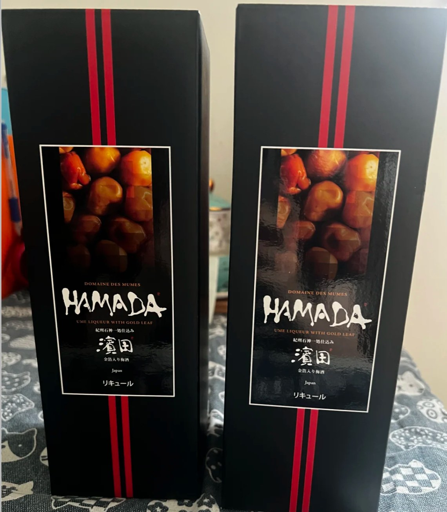

必带物品
六天行程 · 每人一份衣物依据 · 天气与温度参考
查询于 2026-10-23，以下为最低—最高温，非实时预报；出发前一天再查。
10/27 福冈 17—24℃，降雨概率约 50%；10/28 由布院 9—15℃，早晚偏冷。
10/29 别府 13—20℃；10/30 阿苏站附近 14—20℃，有降雨可能。
10/31 熊本 12—19℃；11/01 福冈 12—15℃，返程外套随身留用。
阿苏站附近的预报不是火山口温度。山上更冷、风更大；遇强风、雷雨或关闭，不勉强上山。
来源：气象厅（10/27 福冈）；Open-Meteo（其余地点预报，温度取整）。台风影响尚未确认，另查气象厅台风信息及航班、铁路运行通知。
证件与订单
现金与支付
通信与电子
衣物与鞋
雨具与防水
洗护与药品
随身小包
五站行程地图
北九州往返航班
东航 · 当地时刻上海浦东 T1 → 福冈国际线
09:50 → 12:55
07:50 浦东 T1 建议集合
福冈国际线 → 上海浦东 T1
13:55 → 15:10
11:00 前到国际航站楼为目标
出发前必须确认的四件事
- 携带护照、周游券兑换材料、列车预约回执和预订时使用的信用卡；回执不能代替纸质指定席券。
- 10/28、10/31 指定席已预约，纸券领取情况待确认；JR 北九州 5 日券拟于 10/28—11/01 使用，兑换状态待确认。
- 向清孔苑确认接驳、行李寄存、两餐是否早＋晚及餐时；所订日式房的两张单人床尚未确认。
- 确认 10/29、10/30 列车和 11/01 新干线；确认阿苏火口开放及上下山末班巴士。未核实交通不按旧稿时刻赶车。
上海 → 福冈
- 07:50浦东 T1 集合建议时间，并非航司最晚值机时间；给国际航班手续留足余量。
- 09:50MU517 起飞 → 12:55 抵福冈先入境取行李，再接驳至国内线换地铁；不保证落地后立即到市区。
- 到市区后JR 取票优先，再寄存、游览博多 JR 九州指定窗口领取周游券与已预约指定席纸券；窗口营业与排队需另留时间。
- 21:30 前建议结束晚餐、回酒店；备好明早早餐。
栉田神社 → 博多千年门 → 中洲河畔；晚上择一屋台或拉面。到得晚就只逛中洲。天神或福冈塔＋百道海滨仅作替换，不全部叠加。
博多 → 由布院
- 08:30 前建议在博多站会合酒店至博多预留 30—45 分钟；若未取票，须更早到窗口并预留排队。
- 08:47 前必须完成指定席取票按回执至少提前 30 分钟；这不是窗口到达时间，不能此时才去排队。
- 09:17由布院之森 1 号发车已预约博多 → 由布院 11:31；4 号车 15D、6C。纸券领取后提前到站台。
- 16:30建议回清孔苑，留入住和泡汤时间。
- 17:30 前最迟到清孔苑办理入住非 24 小时前台；餐时未确认，不假定 18:00 一定开晚餐。
寄存行李 → 汤之坪街道 → 金鳞湖 → 回馆泡汤。街道与湖边留约 2—3 小时；小吃随缘，不为排队拖延回馆。
由布院 → 别府
- 清晨可选金鳞湖晨雾；先确认早餐和回站交通，不勉强赶。
- 10:00 前清孔苑退房提前约好回由布院站的接驳或出租车。
- 班次待确认由布院 → 大分换乘 → 别府铁路约 1.5—2 小时为估算，另加旅馆回站交通；没有直达列车。
- 15:00 后御宿野乃可入住；早到先询问寄存。
优先海地狱；时间够再加血池地狱＋龙卷地狱，参观和交通留约 3—4 小时。后两处跨片区，不按步行 12 分钟赶；晚上直接回酒店泡汤即可。
别府 → 阿苏
- 班次待确认优先九州横断特急至阿苏没有合适直达车再查大分换乘；按实际班次提前到站，不沿用旧稿时间。
- 到阿苏后先寄存行李，再查上山和下山巴士。万枫在阿苏站旁，不去内牧。
- 上山前确认下山末班并拍照火口接驳与阿苏站方向巴士都要确认；没有确定回程就不贸然上山。
- 16:00计划开始下山不是末班时刻；若实际末班更早，必须更早结束游览。
火口开放且交通允许：中岳火口 → 草千里。火口关闭或到得晚：只游草千里；散步拍照留约 1—2 小时，返程优先。
阿苏交通注意事项 · 小红书参考
截图含 2025 年修订的历史时刻表，不是 2026 年当日班次。原帖从熊本出发，你们从别府出发；不能照搬到站时间或整套车次。
- 两段巴士分开确认：阿苏站 → 阿苏山上终点站，再换火口接驳到中岳火口；火口 → 山上终点站 → 草千里 → 阿苏站，逐段核对上下车站和方向。
- 先确定回程再游览：现场领取并拍下时刻表，用笔圈出计划班次及更早备选；火口接驳、草千里回阿苏站的末班分别确认，提前到站排队，不压线换乘。
- 票务与支付：站前巴士一日券不默认包含火口接驳；现场核对适用范围、购票点与支付方式，不默认可刷交通 IC 卡，备现金及信用卡。JR Pass 不能当作这两段巴士的车票。
- 步行不是保底退路：原帖提到火口与山上终点站间可步行约 1.3 公里、20 分钟，仅属作者经验；当日须确认开放和步行许可，强风、雷雨、火山管制时不尝试，不能绕过封闭区域。
- 带水、简餐、防晒和防风雨层：草千里可结合博物馆、用餐及观景安排；车站和博物馆可询问盖章，开放及印章是否可用以现场为准。
原帖 15:56 的 Aso Boy 不适用于本次预约。你们 10/31 已预约 12:12 阿苏 BOY! 2 号，仍按 11:52 前到站台执行。
参考《阿苏火山&草千里一日游安排攻略（含盖章）》及你提供的交通截图；核对于 2026-10-25。旧票价、旧班次和作者现场经历不代表当前运营条件。
阿苏 → 熊本
- 上午站前早餐、短途散步；大观峰仅在确认往返车辆、能于 10:00 前回酒店时考虑。
- 11:00 前万枫退房、取齐行李，步行去阿苏站。
- 11:52 前建议阿苏站站台集合按提前 20 分钟留候车余量；不是车站截止进站时间。
- 12:12阿苏 BOY! 2 号发车已预约阿苏 → 熊本 13:20；4 号车 7C、7D。确认已领取纸质指定席券。
- 17:00—19:00建议下通／上通集中采购；晚餐后回酒店装箱，明早直接返程。
熊本酒店寄存 → 熊本城 → 城彩苑 → 下通／上通。最晚入城及熊本熊场次另查；水前寺只能替换下午城内路线，不叠加、不留到返程早晨。
熊本 → 福冈 → 上海
- 07:00—07:45早餐、退房、进熊本站建议按最终班次提前至少 20 分钟在站台集合。
- 08:00—08:30计划选早班新干线到博多班次待确认，并非已预约列车；提前核对运行并划位。11/01 仍在五日券拟用期内。
- 09:30 前目标抵博多，直接转机场交通，不逛商场。
- 10:00 前建议最晚离开博多去机场地铁至国内线 → 国际线接驳；步行、等车、换乘先留 45—60 分钟，按当日交通调整。
- 11:00 前目标到福冈机场国际航站楼提前 2.5 小时倒推为 11:25；此为缓冲目标，不能当航司最晚接收时间。先值机、托运、安检。
- 安检后机场选购一瓶酒 · HAMADA 金箔梅子酒留意登机时间，购物后及时前往登机口。
- 13:55MU518 起飞 → 15:10 上海浦东 T1登机口及登机截止以当日航司通知为准。

HAMADA 濱田 · 金箔入り梅酒
黑盒、红色双竖线；UME LIQUEUR WITH GOLD LEAF。
この写真の「HAMADA 金箔入り梅酒」はありますか。1本購入したいです。
想买照片中这款金箔梅酒一瓶。图片来自提供的购物截图，仅供认款；原帖提及成田机场，福冈机场是否有售尚未确认。